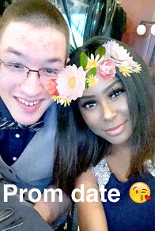
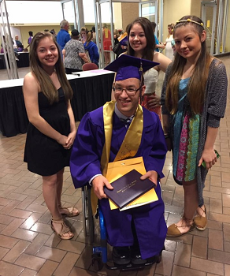
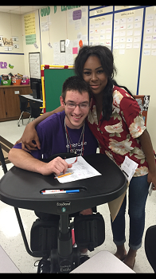

✦ The Special Needs Village ✦
Journey-CP

My name is Annie. I have been blessed with an amazing son Ricky. Ricky has Spastic Diplegia Cerebral Palsy. He was born 8 weeks early at only 32 weeks gestation. He weighed 4 pounds, 10.4 oz and was 17 inches long. He had to stay in the hospital for one month after his birth to give him time to learn how to breath on his own, develop the sucking reflex so that he could eat without using an Ng tube and be able to eat without forgetting to breathe. I was 16 when he was born and it was the ultimate push from being a teenager to an adult as I not only became a mother, but I became the mother of a child who was fighting for his life.
During our stay in the NICU we were told that there were a slew of possible health conditions and developmental delays that could surface due to him being born premature. He did so well and was ready to be released sooner than they predicted which caused the care team to dismiss multiple issues that did not appear before he was released. He seemed to be fine and on track until around the 6 month mark. He was not rolling over, trying to sit up and his legs began to be more and more stiff as he grew. He finally started to "Army" crawl by dragging himself with his arms at around 10 months and be able to roll himself around as well. After missing several milestones we were referred to a neurologist who ordered an MRI. He was diagnosed with CP at 18 months old.
We started physical, occupational and speech thearpies right away. He was also fitted for dAFOs to help his heelcords stretch out and place his feet in the proper position of flexing, especially while standing for short periods of time. At 6, we decided to go with the Baclofen pump as a means to give his body some help with decreasing some of the spasticity. At the time there was not enough significant research to give me confidence in pursing the Selective Dorsal Rhiszotomy route. He was able to start walking short distances using a walker and to stand for short periods of time in a stander in order to help his body stretch. He never gained enough strength or decreased enough spasticity to move independenly without a wheelchair. But this has not stopped him one bit. He continued to receive therapy at home and at school in his special needs classroom.
Ricky played wheelchair basketball and found that he enjoys bowling. He is able to shower, eat, and go out an about in our neighborhood and at school on his own. He went to prom, homecoming and graduated high school this year. We have found ways to include him in everything that we do and he has been able to go out and do stuff on my aunt and uncle's ranch as they load him up and let him drive their Rhino with his cousin Riley. He will never be able to drive a car as his eye muscles do not work together well enough to provide adequate depth perception for safe driving but he has plenty of people that will drive him whereever he wants/needs to go. He lives a fairly normal 19 year old life as far as daily tasks and we are in the process of finding him a part time job. It hasn't been easy and some days are harder than others but we work together to make sure he has the best life that we can give him. I believe his most treasured gift is that he teaches people everyday what it means to make the most of each day and find a way to do what you want to do. He has his moods but he is such a caring and loving kid that you can't help but become attached to him.

Our lives have been forever changed and full of extra blessing because we have Ricky in our lives. I am glad that God trusted me with such a gift as this life is not easy and my mama heart has been broken many times as I have watched him find his place in this world of people who do not take the time to get to know our amazingly different and special kiddos. I hope and pray that as time goes by he will find more and more people to add to his circle that will not only be a blessing to him but that he may bless them as well.
